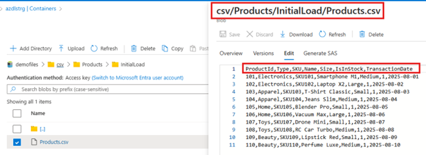
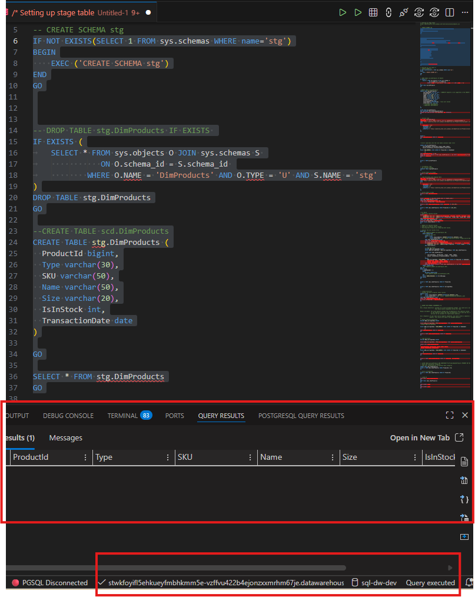
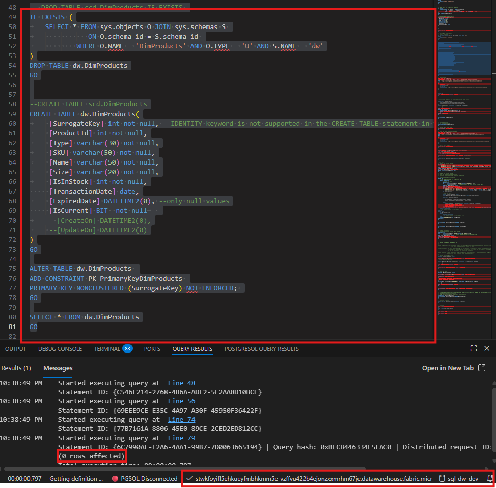
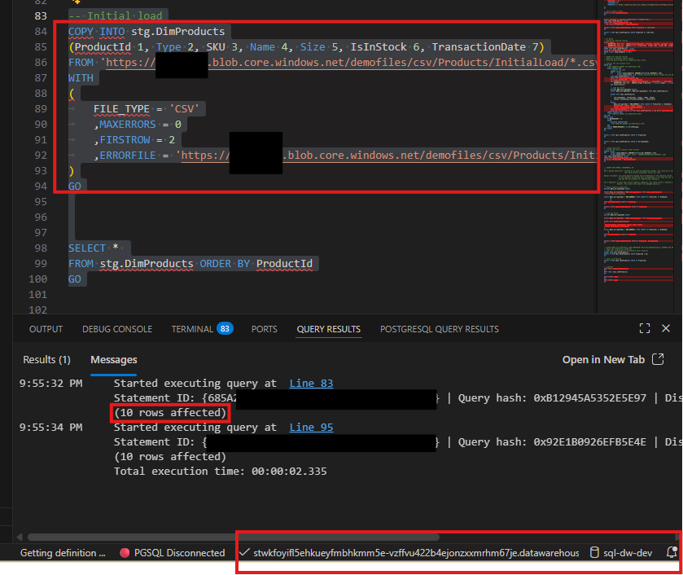
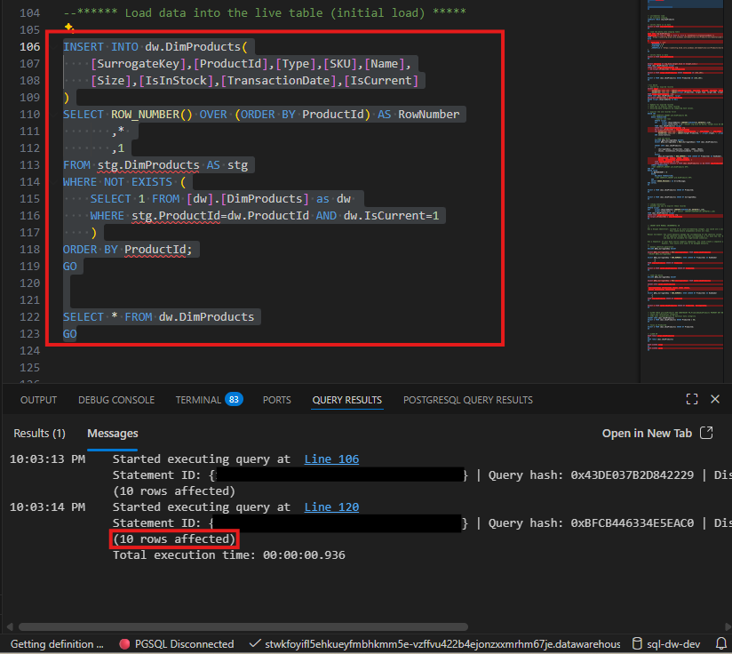
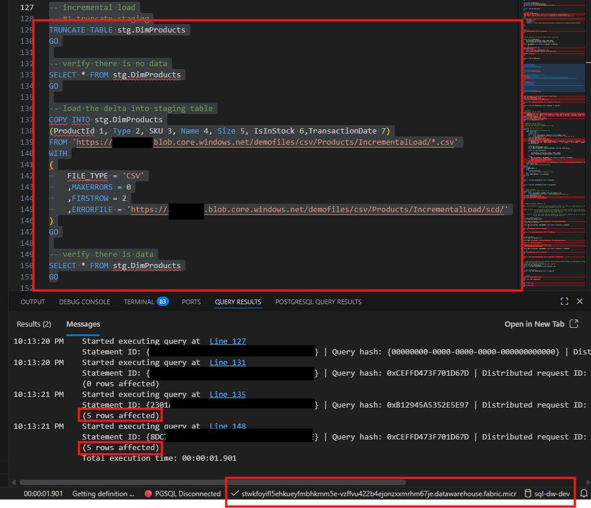
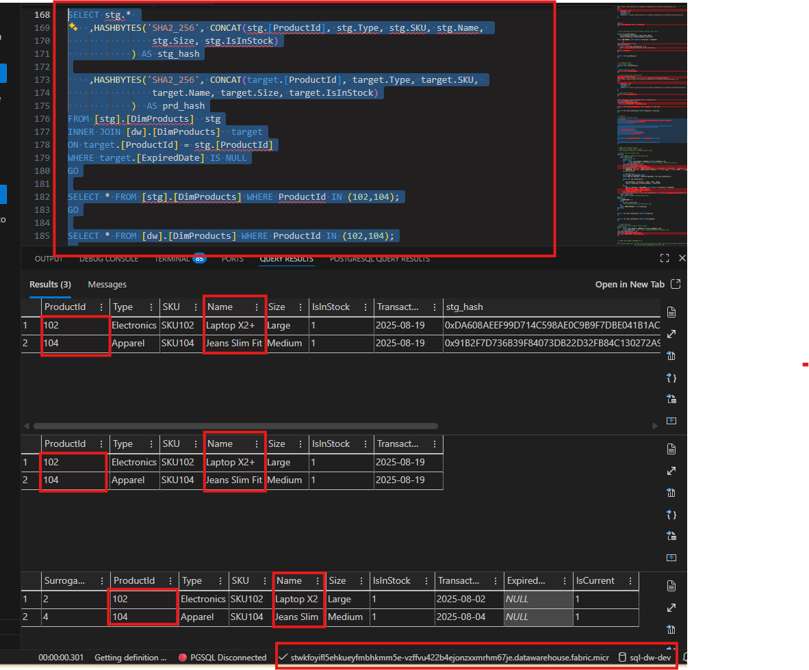
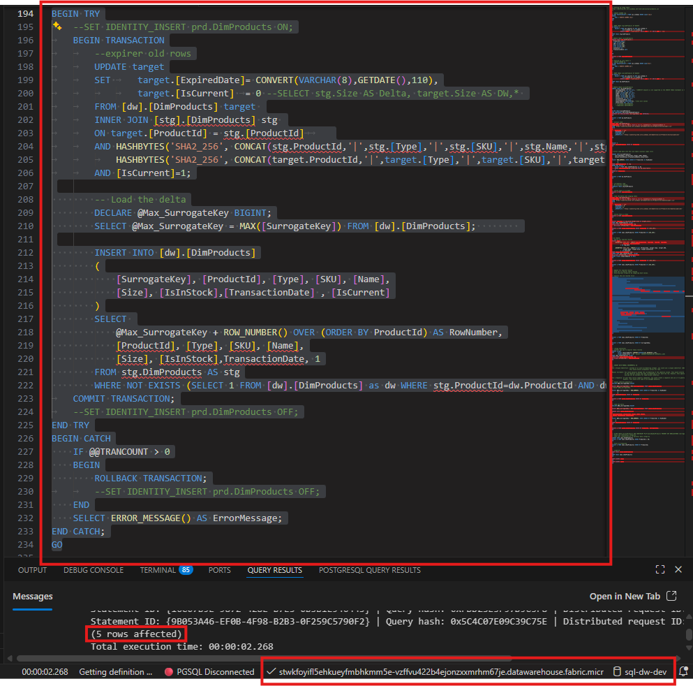
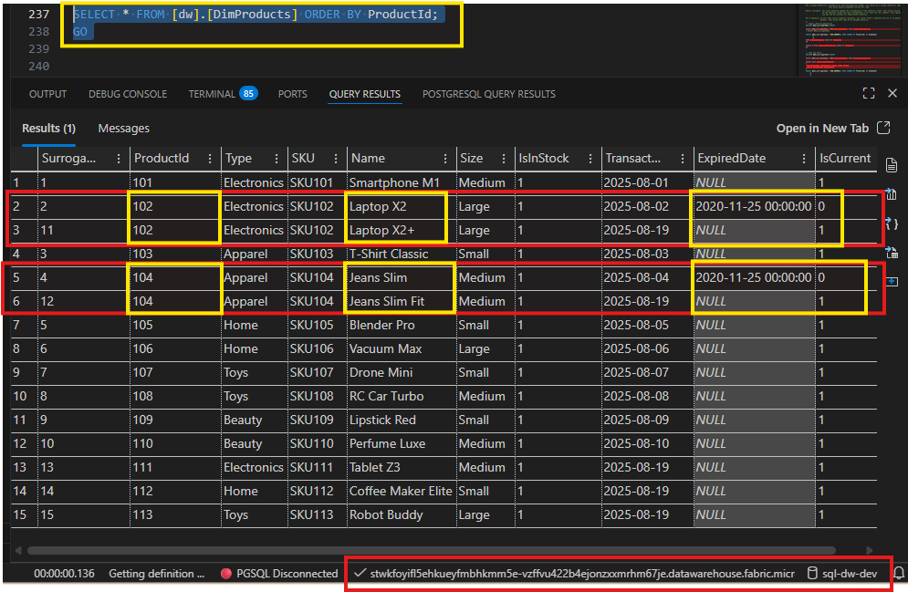

Stay in the loop, follow us on LinkedIn to catch fresh articles every week.
If you're looking to get started with Generative AI, Agentic AI workflows, or migrating your workloads to Microsoft Fabric, partnering with Tech-Insight-Group LLC is your strategic gateway to expert-led consulting and hands-on training services tailored for real-world impact.
In today’s data-driven world, efficiency is everything. Repeatedly loading entire datasets during refresh cycles is not only time-consuming but also costly. This is where incremental load comes in; a strategy that focuses on processing only new or changed data instead of the entire dataset.
By adopting incremental load, organizations can:
There are many ways to implement incremental loads, such as version columns, surrogate keys, event-driven streams, and even handling soft deletes. Each approach has its own strengths, depending on the source system and business requirements.
However, for this article, we’ll focus on one powerful and flexible method: Hash Comparison. We’ll demonstrate how to apply this strategy in Microsoft Fabric, and the same concept can easily be adapted for Microsoft SQL Server or other platforms.
Since we’ve chosen Hash Comparison as our focus for implementing incremental loads, it makes sense to introduce one of the most effective tools for this approach: HASHBYTES with the SHA-256 algorithm. This function in SQL Server allows us to generate a secure, consistent hash value for a row by combining its key columns.
By comparing these hashes between source and target, we can quickly identify changes without relying on timestamps or version numbers. It’s simple, efficient, and works perfectly for large datasets, and the same concept can be applied in Microsoft Fabric Data Warehouse for building robust pipelines.
You may notice below two containers. This structure is widely used in SCD Type 2 pipelines because it aligns with incremental refresh strategies and simplifies automation.
This screenshot below shows the content of the initial file we are about to load.
Let us dive into the demo by first creating a schema if it doesn’t already exist, then defining a staging table to hold our product data. We start by checking for the stg schema and creating it if missing, followed by dropping any existing DimProducts table to ensure a clean setup.
Next, we create the staging table with columns for product details such as ProductId, Type, SKU, Name, Size, IsInStock, and TransactionDate. Finally, we run a SELECT query against the table and notice it’s empty; this is expected because we haven’t loaded any data yet. We’ll populate this staging table shortly, but first, let’s go ahead and create the analytic table that will consume this staged data.
Now let’s move on and create the analytic table that will store our curated product data. We begin by checking if the dw schema already contains a DimProducts table and drop it if it exists to ensure a clean slate. Next, we define the new table with all the original product columns: ProductId, Type, SKU, Name, Size, IsInStock, and TransactionDate, but notice we’ve added three additional columns:
Finally, we run a SELECT query and confirm the table structure. It’s empty for now, which is expected. We’ll populate it after processing the staged data. These extra columns are critical for implementing Slowly Changing Dimensions (SCD) and maintaining historical accuracy in analytics.
Now let’s load some data into our staging table. We use the COPY INTO command to bring in product data from a CSV file stored in Azure Blob Storage. The command specifies the column mapping: ProductId, Type, SKU, Name, Size, IsInStock, and TransactionDate, and points to the blob file path.
We also define options like FILE_TYPE = 'CSV', error handling, and row limits to ensure a smooth load. After executing the query, notice the message: “10 rows affected”, confirming that 10 records were successfully inserted into the staging table. Finally, we run a SELECT query to verify the data, and now the table is populated with our initial load. This sets the stage for transforming and moving data into the analytic table.
Finally, let’s load the data from the staging table into the analytic table. We will use an INSERT INTO statement targeting dw.DimProducts and include all relevant columns, SurrogateKey, ProductId, Type, SKU, Name, Size, IsInStock, TransactionDate, and IsCurrent. To generate unique surrogate keys, the query applies ROW_NUMBER() over ProductId.
It also uses a WHERE NOT EXISTS condition to ensure only new records are inserted, preventing duplicates and maintaining data integrity. After executing the query, notice the confirmation: “10 rows affected”, which means 10 records were successfully moved from the staging table into the analytic table. A quick SELECT verifies that the data is now in the live table, ready for analytics.
Keep in mind: The initial load into the data warehouse is usually straightforward because it’s a bulk insert of all available data, there’s no need to compare existing records or apply complex logic. That’s why it feels “simple” or “less brainwork.”
Now that the initial load is complete, let’s dive into incremental load. Unlike the first bulk insert, incremental loading focuses on processing only new or changed records since the last refresh. This approach reduces processing time, lowers compute costs, and ensures scalability as data grows. We’ll implement logic to detect changes, maintain historical accuracy using our SCD columns, and keep the analytic table up to date without reloading everything.
Let’s go over what’s happening here from below screenshot. We’re starting the incremental load process by clearing out the staging table with TRUNCATE TABLE stg.DimProducts to make sure no old data remains. A quick SELECT confirms the table is empty. Next, we load the new delta data using the COPY INTO command, but notice something important: we’re pulling from a different file located in the same Azure Blob Storage account but inside a different container.
This is how we separate initial load files from incremental load files for better organization. The command maps the columns ProductId, Type, SKU, Name, Size, IsInStock, and TransactionDate, and specifies file type and error handling options. After running the query, notice the message: “5 rows affected”, which means five new records were successfully loaded into the staging table. Finally, we verify the data with another SELECT query. At this point, the staging table contains only the new changes, ready for us to merge into the analytic table without reloading everything.
Here from below screenshot, we are manually detecting changes between the staging table and the analytic table using hash comparison. The query generates a hash for each record in the staging table and compares it to the hash of the corresponding record in the analytic table. If the hashes differ, it means something in the data has changed.
Notice what we see here: we loaded 5 new rows from the incremental file, but only 2 ProductIds (102 and 104) appear as needing updates. Why? Because the other three rows are either new records that don’t exist in the analytic table yet or unchanged records that match the current version. For these two products, the hash difference tells us that some columns have changed. Looking closely, the Name column is different for both records, Laptop X2+ and Jeans Slim Fit. These differences triggered the update logic.
This is exactly why incremental load is powerful: we don’t reload everything, we only update what changed and insert what’s new. In production, this entire process should be wrapped inside a stored procedure or automated pipeline, not done manually, to ensure consistency and scalability.
Notice in the screenshot below, the script gets a bit more complex. Let’s go over what’s happening here. This block of code is the stored procedure logic for applying incremental changes using Slowly Changing Dimensions (SCD Type 2). It’s wrapped in a TRY...CATCH block for error handling and transaction safety.
Why Type 2? Because we want to preserve historical data whenever a record changes. Instead of overwriting the old version, we expire it by setting ExpiredDate and IsCurrent = 0, then insert a new version with updated values and IsCurrent = 1. This way, we maintain a full history of changes for analytics.
Notice the result: “5 rows affected”, meaning the procedure successfully processed the incremental changes, two updates for changed records and three inserts for new ones.
Let us validate what we did, as you can see in the screenshot below. The initial load inserted 10 rows, and the incremental load added 5 more, so in total we now have 15 rows in the analytic table. This confirms that our logic worked: we were able to update existing records (by expiring old versions) and insert new ones following SCD Type 2 principles.
Notice something important: we could have relied on the IDENTITY column for surrogate keys because Microsoft Fabric now supports identity columns (in preview). However, identity values do not guarantee uniqueness and/or sequential order when inserting multiple rows in parallel. To maintain uniqueness and control over sequencing, we leveraged ROW_NUMBER() to generate surrogate keys during the insert step.
This approach ensures that historical versions and new records coexist correctly, preserving data integrity and enabling accurate analytics. The result set clearly shows expired rows with ExpiredDate populated and IsCurrent = 0, alongside active rows with IsCurrent = 1.
Even though you might see scripts like this executed during table creation:
ALTER TABLE dw.DimProducts
ADD CONSTRAINT PK_PrimaryKeyDimProducts
PRIMARY KEY NONCLUSTERED (SurrogateKey) NOT ENFORCED;
In Microsoft Fabric Data Warehouse, primary keys and foreign keys are NOT ENFORCED. This means:
You must enforce integrity through ETL/ELT logic or stored procedures. For example:
Incremental load is more than a technical optimization, it’s a strategic approach to building sustainable, cost-efficient analytics. By processing only new or changed data, you reduce refresh times, lower compute costs, and scale effortlessly as data grows. With Microsoft Fabric’s modern capabilities, implementing this pattern is simpler than ever, empowering you to deliver faster insights while keeping resources under control.
💡 Ready to Take the Next Step?
If you're looking to get started with Generative AI, Agentic AI workflows, or migrating your workloads to Microsoft Fabric, partnering with Tech-Insight-Group LLC is your strategic gateway to expert-led consulting and hands-on training services tailored for real-world impact.
Thank you for reading Optimizing Data Pipelines: Incremental Load Techniques for Cost-Efficient Analytics in Microsoft Fabric. If you found this article helpful, feel free to like, share, or leave a comment, we’d love to hear your thoughts.